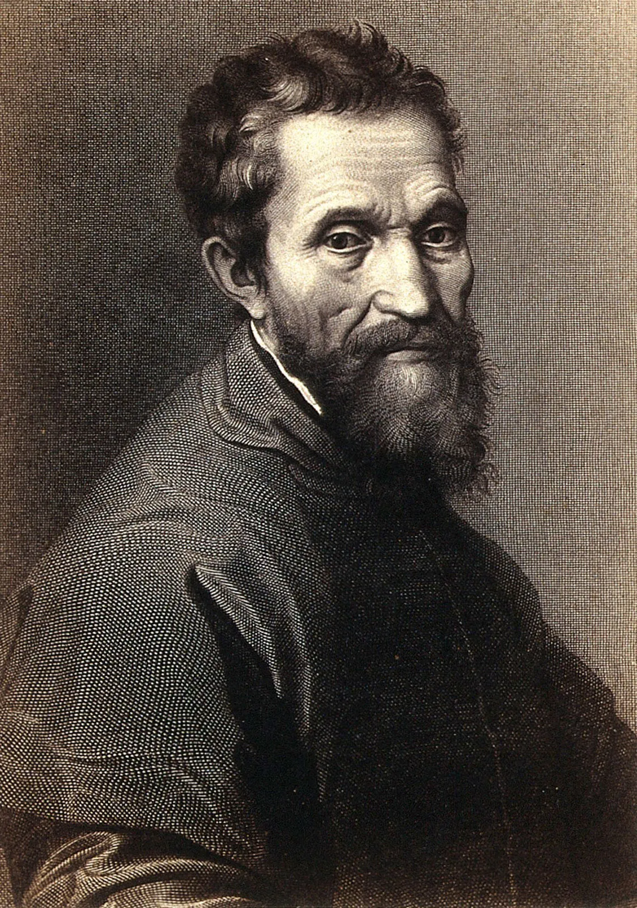

DOMINIK MARČEK

O MNE
Som študent aplikovanej informatiky na STU FEI v Bratislave a mimo toho sa venujem najmä hudobnej produkcii.
V oblasti informatiky by som sa chcel v budúcnosti venovať vedeckej, technickej alebo priemyselnej problematike. V rámci tejto oblasti si viem predstaviť vyvíjať softvér—vzhľadom na oblasť najmä v Pythone, C++ alebo C—alebo pomáhať s dátami v dátovej vede, alebo v oblasti rozvíjať a aplikovať umelú inteligenciu na reálne priemyselné účely.
Okrem informatiky sa snažím zlepšovať v hudobnej produkcii, trávim čas s priateľmi, čítam psychologickú a klasickú beletriu a rôznu vecnú literatúru, raz za čas obdivujem kinematografiu starých filmov a pravidelne robievam niečo pre svoje zdravie.
KĽÚČOVÉ VECI
- Softvérové inžinierstvo
- Hudobná produkcia
- Literatúra